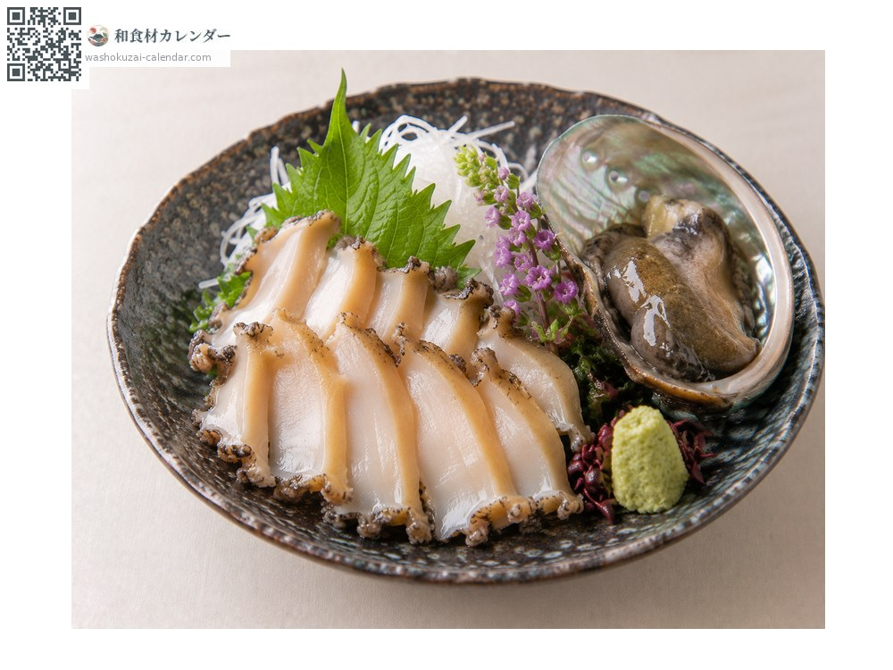
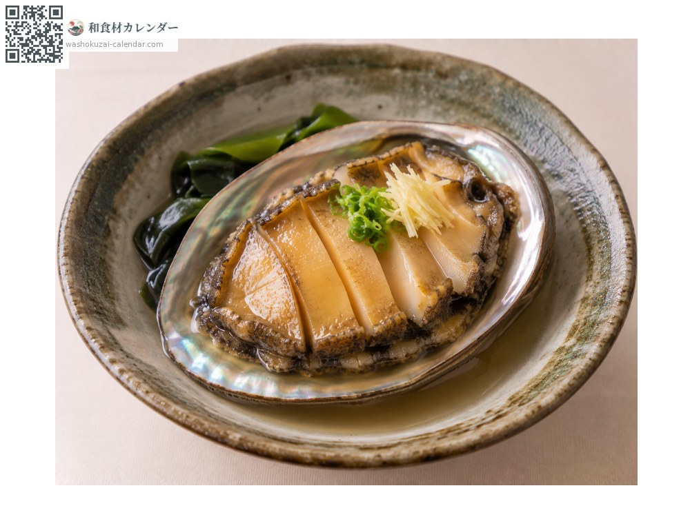
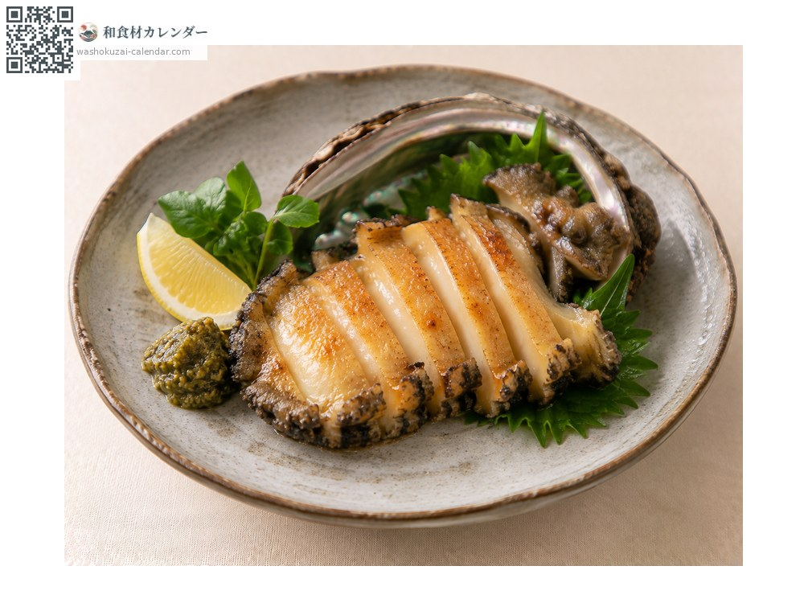
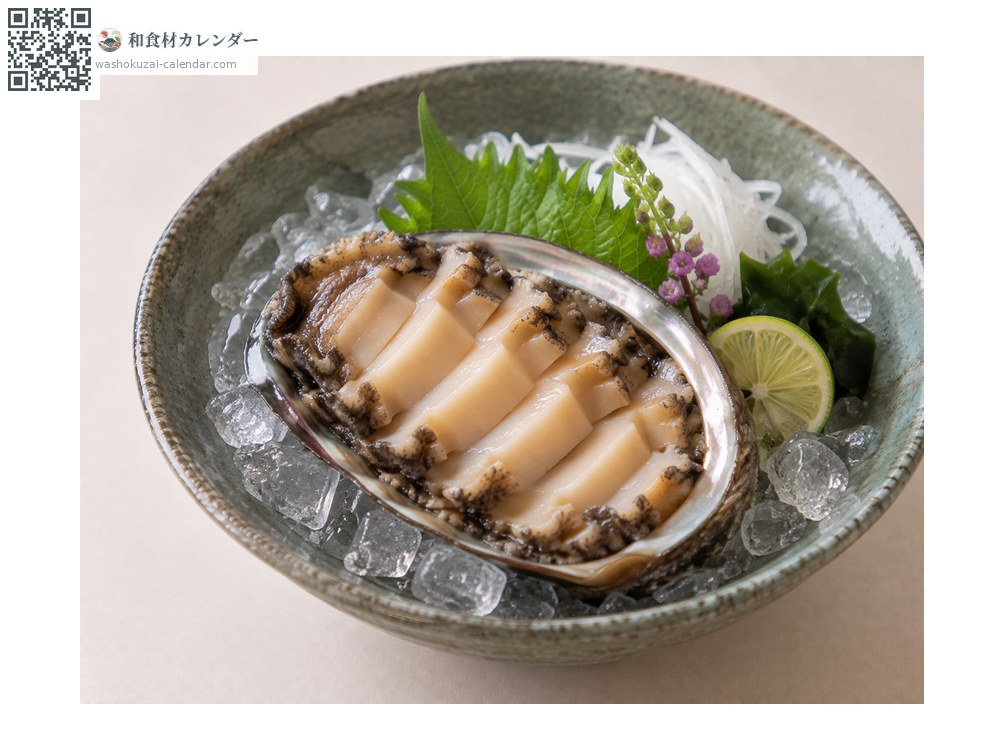

海鲜
鲍鱼
アワビ あわび awabi
别名awabi
应季时期为6月、7月、8月

应季时期
1月
2月
3月
4月
5月
6月
7月
8月
9月
10月
11月
12月
应季有供应
烹饪方法

生鱼片
切成薄片。肝也可以吃。

清酒蒸
蒸过会变得柔软。

香煎排
用黄油香煎。

冰盐水鲍鱼（水贝）
浮在冰水中，是夏日的清凉吃法。
挑选方法
肉身隆起、碰触时强烈收缩。壳厚实。
保存方法
活的直接冷藏，用沾湿的报纸包起来。加热后冷藏可放1至2天。
主要产地
小知识
有黑鲍、雌贝鲍、真高鲍等种类，其中黑鲍最为昂贵。